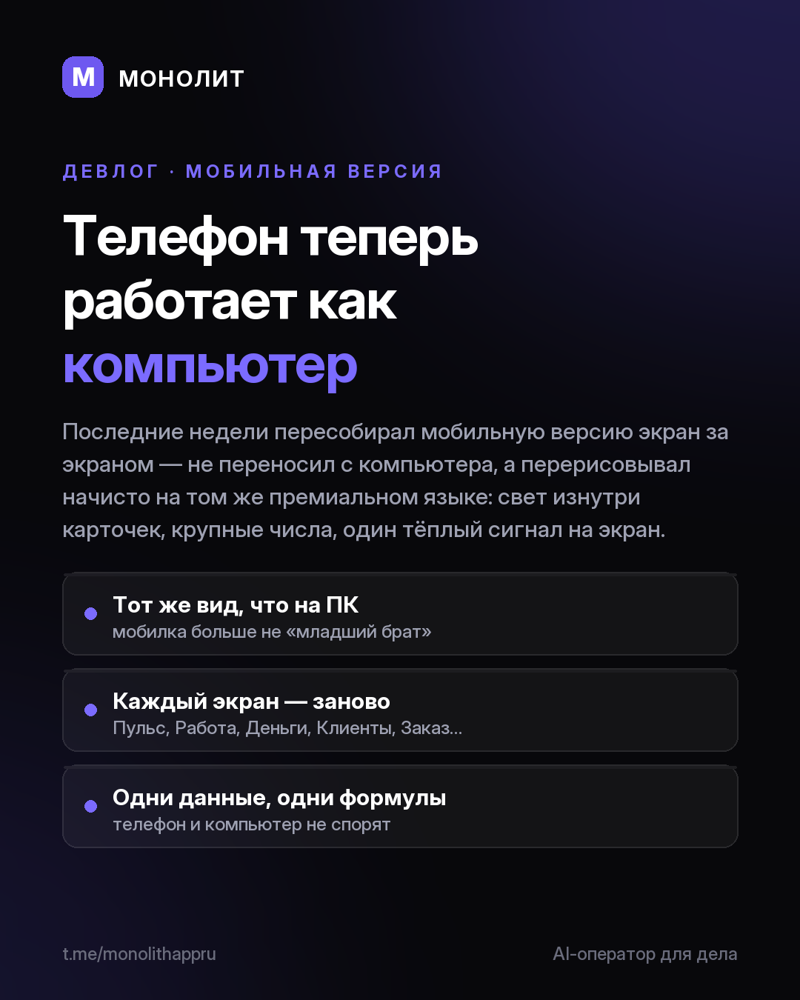

Дневник разработки · 30.07.2026
Мобильную версию пересобрал целиком — теперь как на компьютере

Телефон в МОНОЛИТЕ был «младшим братом» компьютера. Больше нет.
Последние недели пересобирал мобильную версию экран за экраном — не переносил с компьютера, а перерисовывал начисто на том же премиальном языке: свет изнутри карточек, крупные числа, один тёплый сигнал на экран, воздух вместо шума.
Сегодня закрыл последние три экрана: досье клиента, карточку заказа и профиль. Теперь на новом языке — ВСЯ мобилка.
Что стало другим
• Досье клиента: крупно видно, сколько человек принёс и сколько должен.
• Карточка заказа: разделы читаются с одного взгляда.
• Профиль: реквизиты, оформление, безопасность — по-новому.
• Пульс, Работа, Деньги, Клиенты, Команда, Сообщения, Проверка — уже переделаны.
И главное: телефон и компьютер считают по одним формулам и показывают одни данные. Больше не спорят.
Установленные копии обновятся сами в следующем релизе.
МОНОЛИТ — учёт заказов, клиентов и денег одной фразой. Windows и Android, бесплатная бета.
Скачать Читать канал